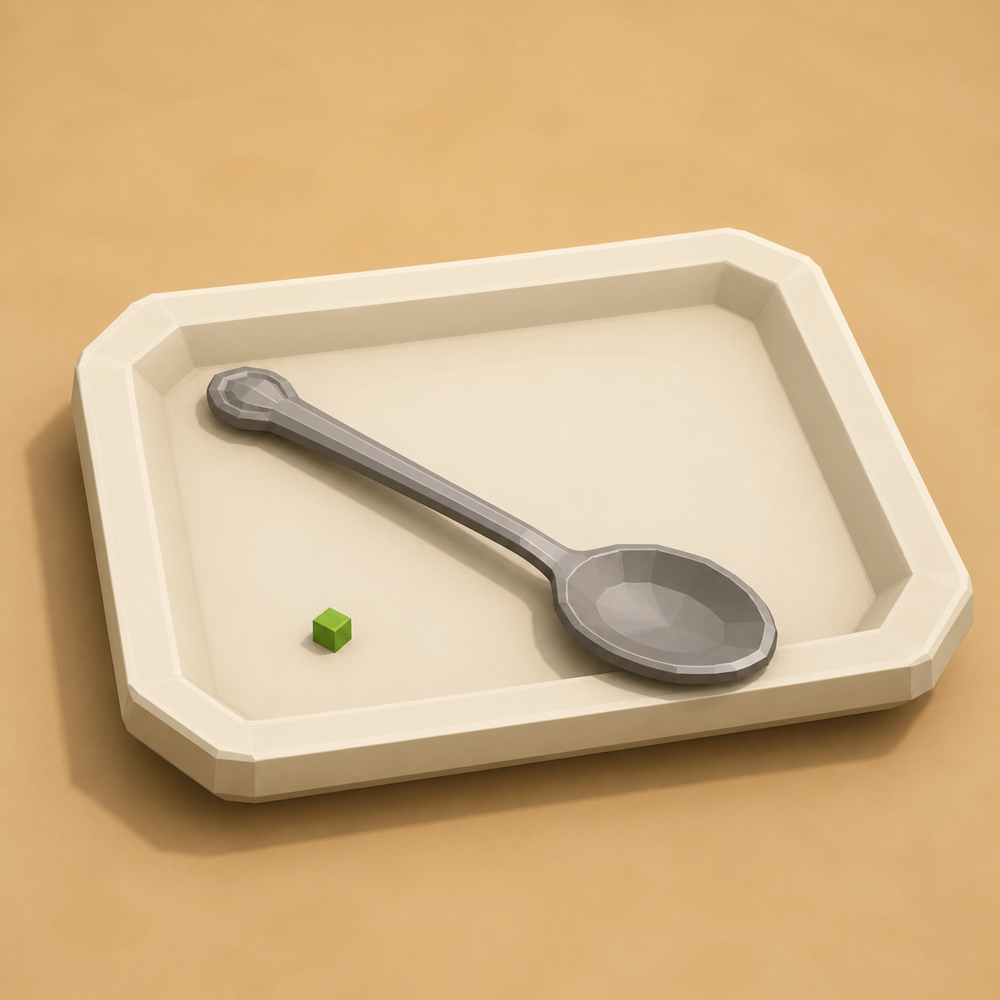

Day 4 — Week 1: Foundations
04A plate and spoon — rotate for readable angles
Straight boxes are useful. Angled boxes are alive. Today you make a small serving plate with a spoon lying diagonally across it, and learn the difference between moving your camera and rotating an element.
A chunky serving plate with a diagonal spoon, your fourth kitchen prop, and a Day-4 devlog posted. The new skill is Rotate: turning one cube so it sits at an angle instead of lining up with the grid.
Warm up — 30-second recall
Answer from memory before opening. This keeps the old moves available while you learn the new one.
What happens right after you Duplicate a cube?
Why name cubes in the Outliner?
body, rim, handle-l, handle-r.What makes separate props feel like one asset pack?
The one new idea — Rotate
Move slides a cube. Resize changes its dimensions. Rotate turns it around an axis. Blockbench lists Rotate as one of the default Edit-mode tools, and the Element panel gives you exact Rotation numbers. [Blockbench Wiki — tools and Element panel]
For today's spoon, use the beginner-safe method: select the spoon cube, find
Element → Rotation, and type Y -35. That means "turn this cube on
the tabletop." You are rotating the spoon, not orbiting your camera.
Orbiting the view only changes what you see. Rotating an element changes the model itself. If the screenshot angle changes but the spoon still lines up with the grid, you moved the camera, not the spoon.

Do it with me
Keep both references open: Interface Cheat Sheet and Transform Cheat Sheet.
-
New Generic Model → name it
File → New → Generic Model. Same starting point as every prop so far.plate-spoon -
Plate base: one shallow slab
Add a cube. Make it a flat rectangle, aroundWidth 12 · Height 0.6 · Depth 8. Sit it just above the grid floor. Name itplate-base. -
Plate rim: four thin bars
Add one long thin cube for the front rim, roughlyWidth 12.5 · Height 0.6 · Depth 0.7, and move it to the front edge of the plate. Name itrim-front. Duplicate it, slide the copy to the back edge, and rename itrim-back. -
Finish the rim with two side bars
Add one short side rim cube, aboutWidth 0.7 · Height 0.6 · Depth 8. Move it to the left edge and name itrim-left. Duplicate it, slide the copy to the right edge, and rename itrim-right. The plate should now read as a shallow tray. -
Spoon handle: a long thin cube
Add a cube, make it a slim handle, aroundWidth 8 · Height 0.35 · Depth 0.7. Move it slightly above the plate surface so it does not flicker against the plate. Name itspoon-handle. -
⭐ The new move: rotate the handle
Selectspoon-handle. In the Element panel, find Rotation and typeY -35. The handle should now lie diagonally across the plate. If it lands outside the plate, switch back to Move and slide it until the angle looks intentional. -
Spoon bowl: copy the same angle
Add a small flat cube, aboutWidth 2 · Height 0.35 · Depth 2. Name itspoon-bowl. Type the same Rotation value,Y -35, then Move it to one end of the handle. The two cubes now read as one spoon. -
Color it (your established loop)
Create a 16 × 16 texture, switch to Paint mode, and fill:- plate parts → warm off-white, pale blue, or red enamel.
- spoon parts → light steel grey.
- Optional garnish → one tiny green cube on the plate for a postable color pop.
-
Frame a set shot
Capture the plate alone, then make one shot with the crate, chopping board, pot, and plate. Four props is enough to look like the beginning of a real pack. -
Post your Day-4 devlog
Save the editable.bbmodel, then post your screenshot with one of the captions below. Streak: Day 4.
itch.io devlog (English):
RedNote / 小红书 (中文):
Quick self-check
Say the answer first, then open the card.
What is the difference between orbiting and rotating?
Which Rotation field turned today's spoon on the tabletop?
Y -35 made the spoon lie diagonally across the plate.What should you do if the spoon flickers against the plate?
Why use the same Rotation number for handle and bowl?
Read the official Blockbench overview sections on the Element panel, Rotate tool, and Transform actions. You only need the parts about Move, Resize, Rotate, Pivot, and the numeric sliders.
Rotation is the first step toward better silhouettes: angled knives, tilted pan handles, open cabinet doors, chef arms, and later simple poses. Today is small on purpose: one angle, one prop, one post.
If the spoon rotates strangely, the plate flickers, or the parts stop lining up, tell me what happened or share a screenshot. I can diagnose whether it is a Rotation value, a Move value, or a height-overlap problem. Bring back your Day-4 result and I'll set up Lesson 5 around either a frying pan, a mug, or the first shared color palette.